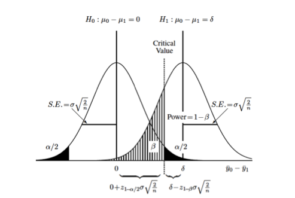
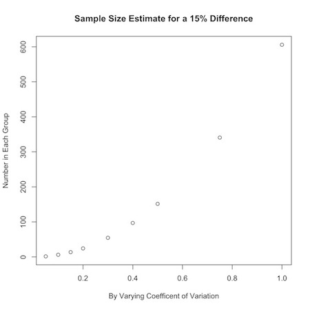
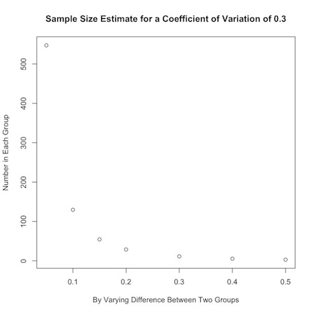

Power Tools for Epidemiologists
Basis of Sample Size Calculations
Continuously Distributed Variables (Lehr’s Equation))
Poisson Distributed or Count Data
Relative Risks and Odds Ratios
Binomial Data or Proportions
Rules of Thumb from Gerald van Belle
Bayesian Approaches
Notes on Power and Sample Size from Gelman and Hill
Clinical epidemiologists are often called on for power and sample size advice and calculations. Some straightforward approaches and reasonable approximations are usually adequate to inform all but the most complex proposals. The following notes are take from Gerald van Belle’s (wonderful) “Statistical Rules of Thumb” for all the rules based on Lehr’s equation, from Chapter 20 of Andrew Gelman and Jennifer Hill’s (equally wonderful) “Data Analysis Using Regression and Multilevel/Hierarchical Models” for the material at the end, and from online slides and notes by Brad Carlin and JoAnn Alvarez for some of the the Bayesian material.
Basis of Sample Size Calculations
There are two key ingredients to sample size calculations: the difference between the two groups, and the variability of the measurements.1
This graphic (taken from van Belle) illustrates some important basic concepts:

Each curve represents the difference between two groups on some continuous measurement (\(\Delta = y_0 - y_1\)). The null hypothesis, that there is no difference between the two groups, is represented by the curve on the left (\(\mu_{\Delta} = 0\)). The alternative hypothesis, that there is some difference between the two groups, is represented by the curve on the right (\(\mu_{\Delta} = \delta\)). Each distribution is also characterized by its variance (\(\sigma^2\)) which is usually assumed to be the same (or similar enough…) for both distributions. The relationship between the standard error of the differences in means and the standard deviation, \(se_{\Delta} = \sigma * \sqrt{\frac{2}{n}}\) allows us to set up calculations for the sample size, \(n\). The term \(\sigma \sqrt{\frac{2}{n}}\) derives from the s.e. for the difference between two means with equal variances. 2
You can also see the (conditional) probabilities about test results and true underlying differences that make up the classical components of sample size calculations:
- type I error or \(\alpha\) = Pr[+ result | - difference], ie. false positive
- the black-shaded 0.05/2 tails on the null hypothesis
- type II error or \(\beta\) = Pr[- result | + difference], i.e. false negative
- the hatched 0.2 left-handed tail on the alternative hypothesis
- power or \(1 - \beta\) = Pr[+ result | + difference], i.e. true positive
- the area to the right of \(\beta\) on the alternative hypothesis
Finally, you can also see that you can increase the power of a study without increasing the sample size by (1) measuring your outcome more precisely, which decreases the variance or “shrinks” the two curves towards their respective means and increases the area under the curve to the right of the critical value, or (2) studying a greater effect size, in this case the difference between \(\mu_{\Delta} = 0\) and \(\mu_{\Delta} = \delta\)), which separates the curves from each other and similarly increases the area under the curve to the right of the critical value.
Continuously Distributed Variables (Lehr’s Equation)
Difference Between Two Means
Returning to the graphic above, the critical value, is the point where the upper value of \(\alpha\) on the null curve and the value for \(\beta\) on the alternative curve meet. This defines the point at which you accept or reject your null hypothesis, and sets up the sample size equation as:
\[ 0 + z_{1-\alpha/2} * \sigma \sqrt{\frac{2}{n}} = \delta - z_{1-\beta} * \sigma \sqrt{\frac{2}{n}} \]
Solving for \(n\) allows us to calculate sample sizes. 3
\[ n_{group}=\frac{2(z_{1-\alpha/2} + z_{1-\beta})^2}{(\frac{\mu_1 - \mu_2}{\sigma})^2} \]
Substituting the usual values of 1.96 for \(\alpha\) and 0.84 for \(\beta\), and recognizing the denominator as the square of the standardized difference (\(\Delta ^2\)), yields the rule of thumb called “Lehr’s Equation” or the “Rule of 16”:
\[ n_{group}=\frac{2(1.96 + 0.84)^2}{(\Delta)^2} \\ n_{group}=\frac{16}{(\Delta)^2} \]
Say, for example, you want to demonstrate a 10 point difference in IQ between two groups, one of which is exposed to a potential toxin, the other of which is not. Using a mean population IQ of 100, and a standard deviation of 20:
\[ n_{group}=\frac{16}{(100-90/20)^2} \\ n_{group}=\frac{16}{(.5)^2} = 64 \]
or a total sample size of 128.
We can code this up as a function in R:
This allows us to quickly check various scenarios. For the example above we may believe that the actual mean difference between the two groups may be anywhere between 2 and 10 points:
Or that the actual standard deviation may be somewhere between 10 and 20 IQ points:
Or some combination of difference and variation:
For a single sample setting, e.g. comparing an outcome to some known or assumed population value, the numerator is 8 rather than 16.
Detectible Difference Between Two Means
We can re-arrange Lehr’s equation to solve for the detectible standardized difference between two populations:
\[ n_{group}=\frac{16}{(\Delta)^2} \\ (\Delta)^2 = \frac{16}{n_{group}} \\ \Delta = \frac{4}{\sqrt{n_{group}}} \\ \]
For the unstandardized difference
\[ \delta = \frac{4 \sigma}{\sqrt{n_{group}}} \]
Some R code for this formula:
So, for example, we were interested in knowing the difference in mean IQ we could detect with a sample size of 50:
or about 12 IQ points.
Percentage Change in Means
Clinical researchers may be more comfortable thinking in terms of percentage changes rather than differences in means and variability. For example, someone might be interested in a 20% difference between two groups in data with about 30% variability. Professor van Belle presents a neat approach to these kinds of numbers that uses the coefficient of variation (c.v.) 4 and translating percentage change into a ratio of means.
Variance on the log scale (see chapter 5 in van Belle) is approximately equal to coefficient of variation on the original scale, so Lehr’s formula can be translated into a version that uses c.v.
\[ n_{group}=\frac{16(c.v.)^2}{(ln(\mu_0)-ln(\mu_1))^2} \]
We can then use the percentage change as the ratio of means, where
\[ r.m. = \frac{\mu_0 - \mu_1}{\mu_0} = 1 - \frac{\mu_1}{\mu_0} \]
to formulate a rule of thumb:
\[ n_{group}=\frac{16(c.v.)^2}{(ln(r.m.))^2} \]
In the example above, a 20% change translates to a ratio of means of \(1-.20=.80\). (A 5% change would result in a ratio of means of \(1-.05=.95\); a 35% change \(1-.35=.65\), and so on.) So, the sample size for a study seeking to demonstrate a 20% change in means with data that varies about 30% around the means would be
\[ n_{group}=\frac{16(.3)^2}{(ln(.8))^2} = 29 \]
An R function based on this rule would be:
Say you were interested in a 15% change from one group to another, but were uncertain about how the data varied. You could look at a range of values for the coefficient of variation:
You could use this to graphically display your results:

Or, you could look at how the desired effect size changes sample calculations:

If an investigator has no idea about the expected coefficient of variation in the data, a value of 0.35 is a handy substitute for many biological systems.
Poisson Distributed or Count Data
From a statistical standpoint, sample size calculations for Poisson-distributed data are a fairly straightforward extension of Lehr’s equation. The square root of poisson-distributed data is approximately normally distributed,
\[ y_i \sim Pois (\lambda) \\ \sqrt{y_i} \sim Nl(\sqrt{\lambda}, 0.25) \]
so we can apply Lehr’s equation by taking the square root:
\[ n_{group}=\frac{4}{(\sqrt{\lambda_1}-\sqrt{\lambda_2})^2} \]
From a conceptual standpoint, you may need to re-orient yourself a bit. You can find a nice explanation of Poisson-distributed data here , or take a look at my introduction to probability distributions on this site. In brief, Poisson-distributed data are characterized by the parameter \(\lambda\), which is the number of events, \(n\) divided by the number of units, \(k\) that gave rise to those events. It’s the \(k\) units that might trip you up. They can be geographic areas like ZIP codes tabulation areas, time periods, regions of a chromosome etc… In healthcare, the units are often person-time of some kind.
As an example, say the mean count of some health outcome is 36 per person-year of observation and you want to demonstrate a decrease to 30 per person-year in a comparison population. The calculation is \(n_{group}=\frac{4}{(\sqrt{30}-\sqrt{36})^2} = 15\) person-years of observation in each group.
If the mean counts are per unit time \(T\) (or volume \(V\) for perhaps a lab study), then each mean is \(T * \lambda\), and the sample size formula is \(n_{group}=\frac{4}{T * (\sqrt{\lambda_1}-\sqrt{\lambda_2})^2}\)
To account for potentially high background rates of disease, \(\lambda *\), add the background rate to the individual means \(n_{group}=\frac{4}{(\sqrt{\lambda_1 + \lambda *}-\sqrt{\lambda_2 + \lambda *})^2}\)
As an example, consider two Poisson sets of data with means \(\mu_1=1\) and \(\mu_2=2\) per unit of observation. The sample size calculation is \(n_{group}=\frac{4}{(\sqrt{2}-\sqrt{1})^2} = 25\) units of observations in each group. If there is a background population rate of 1.5, the calculation becomes \(n_{group}=\frac{4}{(\sqrt{3.5}-\sqrt{2.5})^2} = 50\) units of observation.
We can manipulate this formula to solve for the rate above the background you would need for a statistically significant result (\(\Delta_{\lambda}\)) by setting \(\lambda_1\) to 0 and \(\lambda_2\) to \(\Delta_{\lambda}\). Some algebra results in the formula
\[ \Delta_{\lambda} = 4 \sqrt{\lambda *} \]
i.e., you need 4 times the square root of the background rate more outcomes to demonstrate a statistically significant difference.
If, for example, there are usually 50,000 deaths in a population, and you want to demonstrate the effect of some event, you would need to see \(4 \sqrt{50000} = 895\) more deaths in that population.
Here a three R functions that calculate sample sizes for Poisson-distributed count data as described above.
# count data, x= population mean
nPois<-function(x0,x1){
n<-4/(sqrt(x0)-sqrt(x1))^2
n
}
nPois(1,2)
#takes background rate x into account
nbrPois<-function(x,x0,x1){
n<-4/(sqrt(x+x0)-sqrt(x+x1))^2
n
}
nbrPois(1.5,1,2)
# n beyond background rate needed
nbbrPois<-function(x){
n<-4*sqrt(x)
n
}
nbbrPois(50000)Upper Bound for Count Data when No Events Have Occurred (Rule Of 3)
Here is a another good rule to just memorize. Given no events or outcomes in a series of \(n\) trials, the 95% upper bound of the rate of occurrence is
\[ \frac{3}{n} \]
Say there have been no adverse events or outcomes in 20 trials or procedures. There is still a \(3/20=0.15\) or 15% chance of an adverse event our outcome.
This rule derives from the Poisson distribution, where the sum of independent Poison variables is also Poisson, so that \(n\) trials of a \(Pois(\lambda)\) process is \(Pois(n \lambda)\). The probability of at least one non-zero trial is 1 minus the probability that all the trials are zero,
\[ Pr[some_{1}] = Pr[1-\forall_{0}] \]
Setting this probability to statistical significance, results in
\[ 1-0.95 = 0.05 = Pr[\Sigma y_1 = 0] = e^{n \lambda} \\ n \lambda = -ln(0.05) = 2.996 \\ \lambda \approx 3/n \]
Relative Risks and Odds Ratios
We can extend the application of the Poisson distribution to count data, for sample size calculations on relative risk estimates. The following formula calculates the sample size necessary to detect a relative risk:
\[ n_{group} = \frac{4}{\frac{c}{c+d} (\sqrt{RR}-1)^2} \]
where \(\frac{c}{c+d}\) is the probability of disease in the unexposed drawn from the classic epidemiologic 2x2 Punnett square. This rule of thumb is considered reasonably accurate for diseases with prevalences under 20%, which (fortunately for society in general) account for most outcomes in which epidemiologists are interested.
As an example, we would need 747 observations in each group to detect a relative risk of at least 3 in a study of a disease with a prevalence of 1% in the unexposed population.
\[ n_{group} = \frac{4}{0.01 (\sqrt{3}-1)^2} = 746.4 \]
An interesting aspect of this formula is that increasing the prevalence of a disease decreases the required sample size. This can perhaps be accomplished by increasing the period of observation.
We can rearrange the formula to calculate the number of outcomes \(c\) needed to detect a relative risk:
\[ c = n_{group} * \frac{c}{c+d} = \frac{4}{(\sqrt{RR}-1)^2} \]
So, to detect a relative risk of at least 3, we need \(4/ (\sqrt{3}-1)^2 \approx 8\) outcomes in the unexposed group, and \(3 * 8 = 24\) outcomes in the exposed group. Note that this is really just the flip side of the previous formula, since rates of 1/100 in the unexposed and 3/100 in the unexposed require 747 people in each group. It is the number of outcomes that is crucial, not necessarily the number of exposed and unexposed.
Log-Based Formulas
Another approach 5 to calculating sample sizes for outcomes like relative risks and odds ratios involves logarithms. In this approach the sample size for a relative risk is:
\[ n_{group} = \frac{8(RR+1)/RR}{\frac{c}{c+d} (ln(RR))^2} \]
and that to achieve a specified odds ratio is:
\[ n_{group} = \frac{8 \sigma^2_{ln(OR)}}{(ln(OR))^2} \]
where, for an outcome with prevalence \(p_0\) in the unexposed and \(p_1\) in the exposed, \(\sigma^2_{ln(OR)} = \frac{1}{p_0} + \frac{1}{1-p_0} +\frac{1}{p_1} +\frac{1}{1-p_1}\) and the ln(OR) is \(ln(\frac{(p_1)(1-p_0)}{(1-p_1) (p_0)})\)
So, for the example above for a disease with an unexposed prevalence of 1%, the sample size for a relative risk of 3 is \(n_{group} = \frac{8(4)/3}{0.01 (ln(3))^2} \approx 884\)
And for an odds ratio of 3, it is \(n_{group} = 8 * (\frac{1}{.01} + \frac{1}{.99} +\frac{1}{.03} +\frac{1}{.97}) / ln(\frac{(.03)(.99)}{.97) (.01)})^2 \approx 865\)
These calculations, though simple, can be tedious, and a couple of R functions are most welcome.
The results of the log-based formulae are more conservative than the Poisson-based formula. This brings up a very important point. Sample size calculations are not prescriptive. They are ballpark estimates, and the ballpark is large. Use them cautiously and as a guide, not as a requirement.
Binomial Data or Proportions
We adapt Lehr’s equation to binomial data by first averaging the two proportions for the populations under study (\(\bar{p} = (p_0 + p_1)/2\)):
\[ n_{group}=\frac{16 \bar{p} \bar{q}}{(p_0 - p_1)^2} \]
As an example, say you are interested in a study where 30% of an untreated population experiences an outcome and you want to demonstrate that treatment decreases that to 10%. \(\bar{p} = (.3 + .1)/2 = .2\) and \(\bar{q} = 1-.2 = .8\), and \(n_{group}=\frac{16 * .2 * .8}{(.3 - .1)^2} = 64\)
As an extension to this rule, you might base initial calculations on the most conservative (maximum) variance estimate with \(p_0=.5\), so that \(\bar{p} = (.5 + .5)/2 = .5\), and the numerator of the sample size calculation becomes \(16 * .5 *.5 = 4\):
\[ n_{group}=\frac{4}{(p_0 - p_1)^2} \]
In our example, the most conservative estimate is \(n_{group}=\frac{4}{(.3 - .1)^2} = 100\)
This conservative approximation is only valid for those cases where the sample size in each group is between 10 and 100. Otherwise, it is best to stick to the more general formula.
The Rule of 50
I found Professor van Belle’s “Rule of 50” online but not in his book.6 It states that for rare, discrete outcomes, you need at least 50 events in a control group, and an equal number in a treatment group, to detect a halving of risk.
Say, for example, the risk of MI is about 8% over 5 years. To demonstrate that a drug reduces that risk to 4%, you will need enough patients to have 50 MI’s in each arm of the study, which works out to 50 / 0.08 = 625 patients in each group, or 1,250 subjects in total. This formula is conservative. The actual calculations for this experiment return a value of 553 patients in each group.
The rule derives from the sample size calculation for a binomial sample
\[ n_{group} = \frac{(z_{1- \alpha / 2} \sqrt{\bar{pq}(1+\frac{1}{k})} + z_{1- \beta} \sqrt{\frac{p_1 q_1}{p_2 q_2}})^2}{\Delta ^2} \]
If the event is rare, then \(p_1 \approx p_2\) and is very small, so \(q_1 \approx q_2 \approx 1\):
\[ n_{group} = \frac{(z_{1- \alpha / 2} \sqrt{\bar{p}(1+\frac{1}{k})} + z_{1- \beta} \sqrt{\frac{p_1}{p_2}})^2}{\Delta ^2} \]
For a 50% decline from group 1 to group 2 \(p_2 = .5p_1\) and \(\bar{p} = .75p_1\). For equal sample sizes (k=1), and the standard alpha an beta, the formula simplifies to:
\[ n_{group} = \frac{(1.96 \sqrt{1.5p_1} + 0.84 \sqrt{1.5p_1})^2}{(0.5p_1) ^2} \]
Solving for \(n_{group}p_1\) result in 47, which for simplicity is rounded up to 50.
Rules of Thumb from Gerald van Belle
- You can safely ignore the finite population correction in binomial surveys of large populations
- A quick estimate of the standard deviation is \(s = \frac{Range}{\sqrt{n}}\)
- Don’t formulate a study solely in terms of effect size. (This even though Lehr’s formula is based on \(\Delta\) which is essentially an effect size)
- Confidence intervals can overlap as much as 29% and still be statistically significantly different
- E.g. \(\mu_1 = 10\) vs. \(\mu_2 = 22\) with \(\sigma = 4\) results in a 95% CI of 2,18 for \(\mu_1\) and 14,30 for \(\mu_2\). A lot of overlap, but the 95% CI for the difference is \(22-10 \pm 1.96 * \sqrt{4^2 + 4^2}\) or 0.9, 33.1, which is still statistically significant
- Optimize unequal sample sizes. In case-control studies you may be limited by the number of cases (\(n_1\)) in your sample. You can optimize your precision by increasing the number of controls (\(n_0\)), so that \(n_0 = kn_1\) , where \(k=\frac{n_{group}}{2n_1-n_{group}}\), and \(n_{group}\) is the result of your sample size calculation.
- E.g. Say sample size calculations for a case-control study return 16 observations in each group, but you only have 12 cases. You can increase your controls to \(k=16/8=2 * 12 = 24\) observations to achieve the same precision.
- Little is to be gained, though, beyond 4 or 5 controls per case
- This rule derives from the variance for the difference in proportions for two groups, \(\frac{1}{n_0} + \frac{1}{n_1} = \frac{1}{n_0} + \frac{1}{kn_0}\), and solving for k.
- An extension of the rule demonstrates that a study can tolerate an imbalance in sample sizes of up to about 20%.
- When the costs for one population are greater than the other, you can optimize costs with unequal sample sizes, but the overall costs will not vary very much.
- E.g. If the costs in one group are 3.5 time greater than the other, increasing the sample size in the other group will result in only a 13% overall cost savings
- This rule again derives from the the variance for the difference in proportions for two groups, \(\frac{1}{n_0} + \frac{1}{n_1}\), and the linear optimization of the total cost, \(C = c_0 n_0 + c_1 n_1\), which results in \(\frac{n_1}{n_0} = \sqrt{\frac{c_0}{c_1}}\)
- If you are planning complex multivariable analyses that are expected to increase precision, simpler formulas will return more conservative estimates.
- In a logistic regression, aim for about 10 outcomes for every parameter in the model 7
Bayesian Approaches
A (Bayesian) Twist to Lehr’s Equation
The results of power calculations are a guide rather than requirement and should be run over a range or possible values for both the effect size and the standard deviation. We can take this to the next logical step and run the calculations over a distribution of values for the effect size and standard deviation. Allowing a parameter to vary in this way is, in essence, Bayesian (or at least Bayesian like) in that it allows us to incorporate uncertainty about the parameters themselves. 8
Let’s return to our first example of demonstrating a 10 point difference in IQ between two groups, one of which is exposed to a potential toxin, the other of which is not, using a mean population IQ of 100, and a standard deviation of 20. Our estimate using Lehr’s formula was 64 observations in each group.
Say, though, that we are uncertain (as we probably should be) about our estimate for the standard deviation. We might believe that the mean estimate of 20 varies normally with a standard deviation of its own of 1. Similarly, we believe that the difference between the two groups is 10 points, but that too may vary normally around that mean by about 1 point. To explore the effect of this uncertainty we’ll first redefine the basic Lehr’s formula function in terms of a difference and a standard deviation.
We’ll use R’s ability to randomly sample from a distribution, and, because negative standard deviations make no sense, we’ll use the truncated normal distribution function to constrain simulated values for the difference between the two groups and the standard deviation to be positive.
We see from this simulation that we can achieve the same power under the same conditions with a few as 30 or as many as 160 observations in each group.
We can, alternatively, look at how power varies for the point estimate of 64 observations in each group. The following formula 9 solves for power given a sample size \(n\), a difference between two groups of \(\theta\) and a standard deviation of \(\sigma\):
\[ Power = \phi (\sqrt{\frac{n \theta ^2}{2 \sigma ^2}}-1.96) \]
And we see that the power of study with 64 observations in each group can be as low as 42% or has high as 98%.
Bayesian approaches to power and sample-size calculations allow a framework to use accumulating or historical data to optimize sample sizes and (perhaps) the time and expense of conducting trials. Statistical advantages of Bayesian approaches to study design, power and sample size calculations are that you can make direct probability statements about results, and can combine similar (“exchangeable”) studies about a drug or outcome. Bayes is also naturally suited to hierarchical modeling of nested and repeated measures to account for complex sources of uncertainty. A Bayesian approach may also be more ethical because it might decrease the number of patients exposed to potentially harmful trials, speed up the process of evaluating potentially efficacious therapies, and make better use of resources.
In power and sample size calculations, we essentially make an initial “guess” about the the detectible difference or standard deviation that go into a sample-size calculation. All we have really done up to now is take the additional step of describing those initial “guesses” as distributions. We cross the Bayesian Rubicon when we adopt an outlook that involves combining “guesses” like expert opinion or previous data in the form of probability distributions, with the sampling distribution or likelihood of current data to calculate an updated posterior distribution. This approach allows us to “peek” at the accumulating evidence and perhaps stop a trial sooner without affecting our ability to analyze the data later.
Adaptive Bayesian Designs
As an example, let’s start with a traditional approach to a drug efficacy study. Say we want to demonstrate that a drug decreases the usual 25% prevalence of some disease down to 10%, for an efficacy of about 40% (.1/.25). We could use Lehr’s formula for binomial data to return a result of a sample size of 103.
\[ n_{group}=\frac{16 \bar{p} \bar{q}}{(p_0 - p_1)^2} \]
What if this is a phase 1 or pilot study and we can only reasonably enroll 20 patients? We can reframe the question. What is the probability that (say) 15 of the twenty will respond? (Perhaps that kind of efficacy will demonstrate the need for a larger study.) Again, we believe the drug to be effective 40% of the time. We also believe that this efficacy ranges from about 20% to 60% with a standard deviation of 10%. We can use this information to define a Beta distribution which we can use as a prior distribution for a binomial simulation to answer this question. (You can find a description and presentation of this kind of conjugate Bayesian analyses here)
This small function takes a mean and variance and returns the parameters for a Beta distribution:
We can now use the Beta distribution to set up a binomial simulation to answer our question:
Note that the power is simply the proportion of simulations that meet or exceed the criteria of being greater than or equal to 15. In this case, there is about a 2% probability that a study of 20 patients will show efficacy in 15 people.
OK. Now let’s say we do what we should always do, and look in the literature. Say we find a study of 20 patients, very similar to the one we planned, that did in fact demonstrate efficacy in 15 of 20 patients. We can incorporate this new information by “updating” our Beta prior through a convenient conjugate relationship that exists between \(Beta\) priors and \(Binomial\) likelihoods. (again, look here for details…) where,
if the prior is
\[ \theta \sim Beta(a,b) \]
and the likelihood is
\[ X| \theta \sim Bin (N, \theta) \]
then the posterior is
\[ \theta | X \sim Beta (X+a, N-X+b) \]
Our new prior for \(\theta\) in our planned study is \(Beta(15+9.2, 20-15+13.8)\). It combines the Binomial \({20 \choose 15} p^{15}q^{20-15}\) likelihood of this external data with the \(Beta(9.2, 13.8)\),
The probability of demonstrating our target efficacy has gone up considerably (though clearly not as high as we might want).
Let’s take this hypothetical situation one step further. Say based on our simulations we decided to go forward with a study of 20 patients. We find that 14 of the 20 patients respond to the treatment. At that point, we decide that if we see 25 successes out of 40 additional patients we will continue drug development. How likely is that to be? It is, again, a matter of updating the prior and running the simulation. Our updated prior for \(\theta\) is \(Beta(14+24.2,20-14+18.8)\). And the probability of 25 or more successes in an additional 40 trials is about 38%.
The point estimates from these simulations will necessarily vary from run to run. We can write a simple function, loop over it 10 , and summarize the multiple runs.
beta.pwr<-function(N=1000, a, b, n, target){
theta<-rbeta(N,a,b)
x<-rbinom(N,n, theta)
y<-0
accept<-ifelse(x>target, y+1, y+0)
prob<-sum(accept)/N
prob
}
n.reps<-1000
my.probs<-rep(NA,n.reps)
for (i in 1:n.reps){
my.probs[i]=beta.pwr(a=38.2, b=24.8, n=40, target=25)
}
summary(my.probs)
densityplot(my.probs)We see that our initial 38% estimate is reasonable, though we could have returned values as low as 34% or has high as 44%.
This kind of iterative decision-making process based on updating or learning from accumulating evidence is the building block of so-called “adaptive” or Bayesian study designs. They are adaptive in that they can change based on observed data. Bayesian in that the decision to change is based on predictive probabilities. The kinds of changes that might occur include early stopping, re-estimation of sample sizes, or applying weights to the randomization process.
Adaptive approaches are suited to settings where patients can be enrolled and their responses can be ascertained relatively quickly, the cost of enrolling and following patients is high, and there is considerable uncertainty about the effect size.
While attractive in many respects, this approach is not without challenges. It requires additional and sometimes complex initial planning, considerable flexibility in changing a study on the fly, and regulatory approval. Additionally, and perhaps most worrisome, adaptive designs may introduce bias and increased type I error due to multiple analyses, from knowing results, or through patient selection. (see this document)
Bayesian Sample Sizes
You may be asking yourself, “Where are the sample size calculations?” A simple adjustment gets us back to sample sizes. Rather than run the calculation for a set sample size of 40, simply replace with a vector of values. Let’s take our most recent calculation.
We see that we hit the usual 80% threshold with a sample of about 49.
Note, that these calculations apply equal weighting to the previous study or evidence, and the new or planned study. This may be reasonable, or it may not. There are other possibilities.
We can downweight the previous study data with weight \(0 \le w \le 1\) to reflect less confidence in the prior than in the likelihood, \(Beta(a*w, b*w)\). Essentially each old patient is worth a fraction \(w\) of a new patient. Say we are not very confident of the evidence from the literature. We can downweight it by 50% by taking the \(Beta(24.2,18.8)\) prior and multiplying through by .5 (\(Beta(24.2*.5,18.8*.5)\)) before updating with the evidence from the trial for a \(Beta(14+12.2, 20-14+14.4)\)
We see that now we don’t hit 80% power until a sample size of about 54.
Alternatively, we can shift or manipulate the prior by increasing or decreasing the number of successes that went into the beta-binomial conjugate calculation while keeping the overall sample size stable. Let’s take the \(Beta(14+24.2,20-14+18.8)\) prior and shift 7 of the successes to failures as \(Beta(7+24.2,20-7+18.8)\)
Now, we would have to increase the sample size to 61 to achieve the same power.
Notes on Power and Sample Size from Gelman and Hill
Andrew Gelman and Jennifer Hill have a somewhat different perspective on sample size and statistical power. Their approach proceeds from specifying goals for standard errors or power. I find it quite informative and include the notes here to give you an additional outlook and interpretation of statistical power and sample size calculations.
Single Binomial Sample Based on a Standard Error
You can calculate how many observations you need for a single binomial outcome we begin (again) with the formula for the standard error for a proportion:
\[ s.e.=\sqrt{pq/n} \]
For example, say you suspect a prevalence of 60% in some population, and you want to measure it with an accuracy of 5%. You substitute and rearrange the values as follows:
\[ .05=\sqrt{(.6)(.4)/n} \\ .05=\sqrt{.24/n} \\ .05=.49/\sqrt{n} \\ .49=.05/\sqrt{n} \\ .49/.05=9.8=\sqrt{n} \\ n \ge 96 \]
Which gives us a quick R function for a single-sample binomial outcome:
To obtain the most conservative sample size, you set the probability to 50%, or \(p=.5\), so that
\[ .05=\sqrt{(.5)(.5)/n} \\ .05=\sqrt{.25/n} \\ .05=.5/\sqrt{n} \\ .5=.05/\sqrt{n} \\ .5/.05=10=\sqrt{n} \\ n \ge 100 \]
Single Binomial Sample Based on Power
More often in epidemiology, we come at sample size calculations from the perspective of statistical power. Power is the probability of statistical significance. It is the chance that 95% of your CI’s (where \(CI=\hat{p} \pm 1.96 \cdot s.e.\)) will cover or be greater than some sample estimate given your assumptions about the underlying population value. Note that we are now dealing with both an assumption about the (supposedly) true underlying population value \(p\), and a sample estimate \(\hat{p}\). The estimate (\(\hat{p}\)) is found on the left side of the \(\pm\) sign in the CI formula. The assumption (\(p\)) is found in the s.e. calculation on the right side of the \(\pm\) sign in the CI formula.
Say you believe the underlying population proportion of some outcome (\(p\)) is 0.6, and you want to demonstrate that outcome (\(\hat{p}\)) in at least 0.5 in your sample. We will, again, use the conservative s.e. estimate of \(\sqrt{(.5)(.5)/n}\), and we calculate \(\hat{p} \pm 1.96 \cdot s.e.\):
\[ .5 \pm 1.96 \cdot \sqrt{(.5)(.5)/n} \\ .5 \pm 1.96 \cdot 0.5/ \sqrt{n} \]
We want to solve for \(n\), so that \(1.96 \cdot 0.5/ \sqrt{n}\) is \(\ge\) a \(\hat{p}\) of .5$.
To specify the usual power or probability that 80% of the CI’s will be above the comparison point of 0.5, we need to use the standard normal 80% value of 0.84 to scale the underlying assumption value for \(p\) of 0.6 and make it equal to the comparison or estimate point of 0.5 which is already scaled by 1.96:
\[ 0.6 - 0.84 \cdot s.e. = 0.5 + 1.96 \cdot s.e. \]
so that
\[ .6 - .84(0.5/ \sqrt{n}) = .5 + 1.96 \cdot 0.5/ \sqrt{n} \\ \]
which reduces to
\[ (1.96 +8.4)(0.5/ \sqrt{n}) = .1\\ (2.8)(0.5/ \sqrt{n}) = .1\\ (0.5/ \sqrt{n}) = .1/(2.8)=.036\\ \sqrt{n} = 0.5/.036\\ n = 196\\ \]
We see the required sample size for 80% power is considerably higher than the previous estimate.
The Rule Of 2.8
As a rule of thumb, for 80% power and a 95% level of statistical significance, the true, underlying or null value is 2.8 s.e.’s away from the comparison value. This is because 2.8 is 1.96 from the 95% limit to which you add 0.84 to reach the 80th percentile of the normal distribution.
\[ \Delta = 2.8 s.e. \\ \Delta = 2.8 \cdot \sqrt{pq/n} \\ n = (2.8 \cdot \sqrt{pq}/ \Delta)^2 \]
Where \(\Delta\) is the difference between the population value and the comparison point.
Here is a quick function for this calculation demonstrated with the values from the example above.
The Rule Of 2
We can incorporate the most conservative estimate for a standard error (\(sqrt{(.5)(.5)/n}\)) into the calculation and simplify it even further:
\[ n = (2.8 \cdot .5/ \Delta)^2 \\ n = (1.4 \Delta)^2 \\ n= 1.4^2 / \Delta^2 \\ n= 1.96 / \Delta^2 \\ n= 2 / \Delta^2 \\ \]
```{.r .numberLines}
pwr2<-function(d){
print(2/(d^2))
}
pwr2(.1)We will, of course, not know what the underlying or true population value is, so these calculations (and all power calculations) are only as good as our assumptions. You should look at various scenarios and see how sensitive your calculations are to your assumptions. For example, say the true underlying value in our example were actually 0.06:
This results in a required sample size of 544, clearly a considerable difference.
Binomial Comparisons
We can extend the discussion above to the difference between two proportions. Again, we begin with the standard error. The s.e. for the difference between 2 proportions is:
\[ \sqrt{p_1 q_1 / n_1 + p_2 q_2 / n_2} \]
substituting for a conservative s.e.
\[ s.e._{diff}= \sqrt{.5 / n_1 + .5 / n_2} = \\ 1 / \sqrt{n_1 + n_2} \]
assuming \(n_1=n_2\), the standard error for the difference between two proportions is
\[ s.e._{diff}= 1/ \sqrt{n} \]
so a conservative sample size (equally divided) for the difference between 2 proportions is
\[ n = (2.8 / \Delta)^2 \]
For example, say we believe some survey outcome is 10% more popular among conservatives than among liberals. Assuming equal sample sizes, how many folks to we have to survey for 80% power? The s.e. of \(\hat{p_1} - \hat{p_2}\) is \(1/ \sqrt{n}\). So, for 10% to be 2.8 s.e.’s from zero, \(n \ge (2.8/0.10)^2 = 784\) or 392 persons in each group.
The result from the function based on Lehr’s equation is
For unequally divided sample (0.x in one group, 0.y in the other), we can calculate
\[ n = (2.8 \cdot (1+ \frac{0.x}{0.y}) / \Delta)^2 \]
divided between the 2 groups.
Continuous Outcomes
The calculations for continuous outcomes proceed much as do the binomial calculations. As in the binomial case, we proceed from a standard error calculation. But, to calculate a s.e. for a continuous outcome, we have to specify the population standard deviation (\(\sigma\)).
So, if we are trying to estimate a single mean (\(\bar{y}\)) from a sample (\(n\)) to achieve a certain s.e., the calculation is:
\[ se = \sigma / \sqrt{n} \\ n = (\sigma / se)^2 \]
If we are, instead, basing our calculation on 80% power to distinguish one value (\(\theta\)) from another value (\(\theta_0\)), the calculation is:
\[ n = (2.8 * \sigma / (\theta -\theta_0))^2 \]
If we are looking to compare two means, then,
\[ se_{\bar{y_1}-\bar{y_2}} = \sqrt{\sigma^2/n_1 + \sigma^2/n_2} \\ n = 2(\sigma^2_1 + \sigma^2_2) / (s.e)^2 \]
assuming \(\sigma^2_1 = \sigma^2_2\), then
\[ n = (2 \sigma / s.e.)^2 \]
and, for 80% power this simplifies to
\[ n = (5.6 \sigma / s.e.)^2 \]
where 5.6 arises from doubling 2.8.
Example: Zinc Supplementation and Hiv+ Children’s Growth
Gelman and Hill present an example of sample size calculations for a study investigating the effectiveness of dietary zinc supplementats to improve HIV + children’s growth. 11
Simple Comparison of Means
If we believe, based on the literature and evidence, that zinc supplements can increase growth by about 0.5 \(\sigma\) ’s, then the estimated effect size is \(\Delta = 0.5 \sigma\), and
\[ n = (5.6 \sigma / \Delta)^2 \\ = (5.6 \sigma / 0.5 \sigma)^2 \\ = (5.6/.5)^2 \\ = 126 \]
or a sample size of 63 in each group. 12
Estimating Standard Deviations from Previous Studies
Our estimate of the effect size (\(\Delta\)) and standard deviation (\(\sigma\)) will have an important impact on our sample size calculations. Gelman and Hill present a nice approach to obtaining estimated effect sizes and standard deviations from the published literature. The example, again, is based on the effect of dietary zinc supplements in South African children. This time the outcome is the effect of zinc on diarrhea. Four previous studies report results on this effect.
The first study, by Rosado, et al, was set in Mexico in 1997:
| Treatment | Sample Size | Avg # episodes/yr (s.e) |
|---|---|---|
| placebo | 56 | 1.1 (0.2) |
| iron | 54 | 1.4 (0.2) |
| zinc | 54 | 0.7 (0.1) |
| zinc+iron | 55 | 0.8 (0.1) |
The effect estimate (\(\Delta\)) for this study is calculated from this table as the weighted difference of the two arms of the study:
\[ \Delta = \\ \frac{1}{2}(1.1 + 1.4) - \frac{1}{2}(0.7 + 0.8) \\ = 0.5 \]
Or a difference of 0.5 episodes of diarrhea per year.
The standard error for \(\Delta\) is also based on the table and calculated as:
\[ se_{\bar{y_1}-\bar{y_2}} = \sqrt{\sigma^2/n_1 + \sigma^2/n_2} \\ = \sqrt{s.e^2_1 + s.e^2_2} \\ = \sqrt{\frac{1}{4}(0.2^2 + 0.2^2) + \frac{1}{4}(0.1^2 + 0.1^2)} \\ = 0.15 \]
Or, that zinc reduced diarrhea in this population an average of about 0.3 to 0.7 episodes per year.
We next use the sample sizes from the table and our calculated s.e. to deduce \(\sigma\)’s for each group using the formula \(s.e. = \sigma / \sqrt{n}\)
\[ \sigma_{placebo} = 0.2 * \sqrt{56} = 1.5 \\ \sigma_{iron} = 0.2 * \sqrt{54} = 1.5 \\ \sigma_{zinc} = 0.1 * \sqrt{54} = 0.7 \\ \sigma_{iron+zinc} = 0.1 * \sqrt{55} = 0.7 \\ \]
So, assuming our calculated effect size of \(\Delta = 0.5\) and standard deviations of 1.5 and 0.7 for the two groups, the the estimated absolute difference of a future study with n/2 children in each group would have a standard error of \(\sqrt{1.5^2/(n/2) + 0.7^2/(n/2)} = 2.2/ \sqrt{n}\). For the effect size to be at least 2.8 sd’s away from zero, n would have to be \(n=(2.8 * 2.2/0.5)^2=152\) persons in each of the two groups.
Another study we could use was conducted by Lira et al, in Brazil in 1997, only this time the results are presented on a ratio scale with errors presented results in terms of confidence intervals:
| Treatment | Sample Size | % Days Diarrhea | Prevalence Ratio (95% CI) |
|---|---|---|---|
| placebo | 66 | 5% | 1 |
| zinc | 71 | 3% | 0.68 (0.49, 0.95) |
We convert the CI’s for the prevalence ratios (0.49, 0.95) to the log scale (-0.71, -.05) and divide by 4 to get an estimated standard error of 0.16 on the log scale.
\[ se_{Tx} = ((-.05)-(-.71))/4 = .16 \]
The reported point estimate for the effect is 0.68, or about a 32% decrease in days with diarrhea which is in the same direction as and consistent with the effect estimate from the Rosado study. Exponentiating the s.e. of 0.16 back to the natural scale (1.2) our calculation for the sample size based on this study, then, is
\[ (2.8*(1.2/.32))^22 \]
or 110 children in each arm of the study.
To illustrate the impact of the effect estimate on these calculations, we can look at another study, this time by conducted by Ruel et al, in Guatemala in 1997. It presents results in terms of absolute differences in the number of outcomes, and their associated confidence intervals. Note first, though, that the outcomes are much higher than those in the Rosado study. Eight episodes per 100 days here would translate to about 30 episodes per year, compared to 1 episode per year in the Rosado study. Clearly a different group of children and setting.
| Treatment | Sample Size | Avg. # episodes/100 d (95% CI) |
|---|---|---|
| placebo | 44 | 8.1 (5.8, 10.2) |
| zinc | 45 | 6.3 (4.2, 8.9) |
We divide the CI’s by 4 to deduce the s.e.’s:
\[ se_{placebo} = (10.2-5.8)/4 = 1.1 se_{zinc} = (8.9-4.2)/4 = 1.2 \]
The treatment effect size is also considerably larger with \(\Delta = 8.1-6.3=1.2\). The standard error for \(\Delta\) is
\[ \Delta{se} = \sqrt{1/2 * 1.1^2 + 1/2 * 1.2^2} = 1.6 \]
Using the same approach as before, now with \(\Delta = 1.2\) and standard deviations of 1.1 and 1.2 for the two groups, the estimated absolute difference of a future study with n/2 children in each group would have a standard error of \(\sqrt{1.1^2/(n/2) + 1.2^2/(n/2)} = 2.3/ \sqrt{n}\). For the effect size to be at least 2.8 sd’s away from zero, n would have to be \(n=(2.8 * 2.3/1.2)^2=29\) persons in each of the two groups.
The take home message here is that sample size calculations are speculative, not prescriptive, and should be used to help guide rather than lock in analyses. So from these analyses, you could conclude that a total sample size of 200 to 300 could reasonably be expected to demonstrate a 30% to 50% decline in the frequency of diarrhea.
Sample Size Calculations in Regressions With Control Variables
In the setting of regression models the overall standard deviation, \(\sigma\), is replaced by the residual standard deviation, \(\sigma{res}\), which incorporates the additive predictive power of control variables. Adding control variables increases the predictive power of the model, which decreases \(\sigma_{res}\) and reduces the target sample size.
If you’re interested in a sample size calculation for a specific regression coefficient, you can use the rule that standard errors are proportional to \(1/\sqrt{n}\) and apply it to the results of a previous or current analysis. For example regression analysis of earnings and height returned a regression coefficient for the effect of gender of 0.7 with a standard error of 1.9 and a non-statistically significant 95% CI of (-3.1, 4.5). How large a sample size would be needed to demonstrate statistical significance? For a point estimate of 0.7 to be statistically significant, it would have to have a minimum standard error of 0.35, which would return a lower bound for a 95% CI of .7-(2*.35)=0. Based on the \(1/\sqrt{n}\) proportionality rule, we would have to increase the original sample size by a factor of \((1.9/0.35)^2=29\). The original study surveyed 1,192 people, so we would have to survey \(29*1192=35000\) people to demonstrate the statistical significance of this gender interaction effect.
This result, though, is actually only for 50% power. As noted in the discussion above, to calculate 80% power, we need to use the rule of 2.8. Rather than a standard error or 0.35, we need a standard error of \(.7/2.8=0.25\), so that the actual increase in sample size would be \((1.9/0.25)^2 * 1192= 70,000\). Even then, this calculation is provisional, because we are assuming that the beta coefficient is actually 0.7. Remember, the original analysis informed us this coefficient could be anywhere between -3.1 and 4.5.
Footnotes
Assuming the usual 80% power and 5% type I error, which we’ll discuss in a moment…↩︎
\(\sqrt{\frac{\sigma^2}{n_1}+\frac{\sigma^2}{n_2}}\) = \(\sigma \sqrt{\frac{1}{n_1}+\frac{1}{n_2}}\) = \(\sigma \sqrt{\frac{2}{n}}\)↩︎
Alternatively, solving for \(\beta\) allows us to calculate power.↩︎
As a reminder, the coefficient of variation for data is the standard deviation as a proportion of the mean (\(c.v. = \sigma / \mu\))↩︎
van Belle refers to the work of Lachin (2000) and Selvin (1996)↩︎
It is also now no longer online. I believe because Dr. van Belle is no longer at Children’s Mercy in Kansas City It is best, though to use this rule cautiously.↩︎
You will also find this rule of thumb in Rothman, Greenland and Lash’s “Modern Epidemiology”↩︎
(Much of this initial discussion is based on a course by David Spiegelhalter and Nicky Best held in Cambridge a few years back.)↩︎
Also from course notes by David Spiegelhalter…↩︎
(In R loops are considered computationally less efficient than vectorized operations like apply(), but in this case I think the loop is clearer and will run quickly on all but the most moribund machines.)↩︎
Based on the observation that zinc and other micronutrients reduce diarrhea and gastrointestinal disease which adversely effect the immune system and are associated with more severe HIV disease.↩︎
The Rule of 16 result for this problem would be \(16/.5^2=64\) in each group↩︎